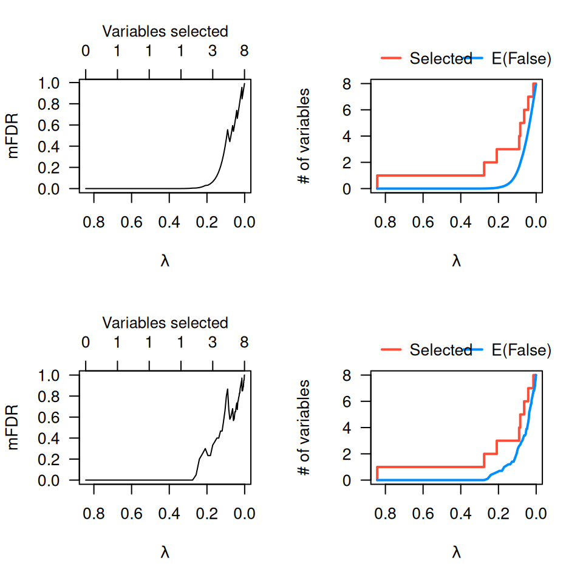
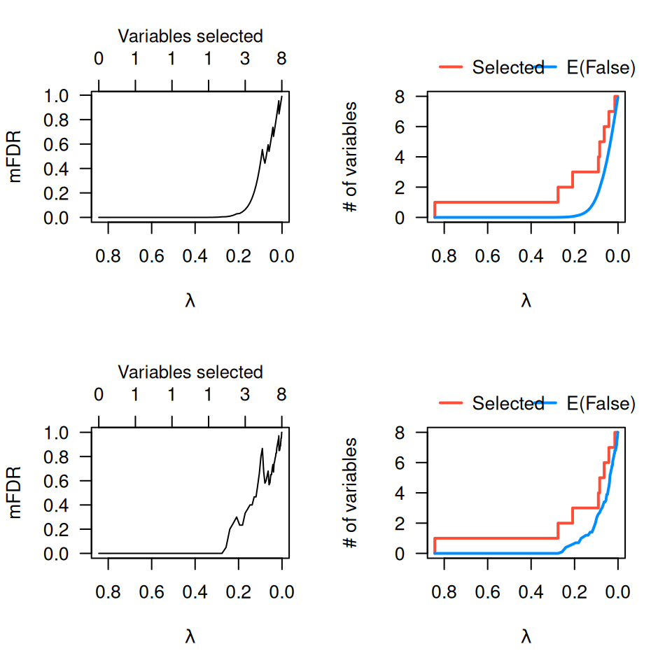

Plot marginal false discovery rate curves from an mfdr or perm.ncvreg object.
Arguments
- x
A
perm.ncvregormfdrobject.- type
What to plot on the vertical axis.
mFDRplots the marginal false discovery rate;EFplots the expected number of false discoveries along with the actual number of variables included in the model.- log.l
Should horizontal axis be on the log scale? Default is
FALSE.- selected
If
TRUE(the default), places an axis on top of the plot denoting the number of variables in the model (i.e., that have a nonzero regression coefficient) at that value oflambda.- legend
For
type="EF"plots, draw a legend to indicate which line is for the actual selections and which line is for the expected number of false discoveries? Default isTRUE.- ...
Other graphical parameters to pass to
plot()
References
Breheny P (2019). Marginal false discovery rates for penalized regression models. Biostatistics, 20: 299-314.
See also
Examples
data(Prostate)
fit <- ncvreg(Prostate$X, Prostate$y)
obj <- mfdr(fit)
obj[1:10,]
#> EF S mFDR
#> 0.84343 0.000000e+00 0 0.000000e+00
#> 0.78658 1.418692e-11 1 1.418692e-11
#> 0.73357 3.642789e-11 1 3.642789e-11
#> 0.68413 1.098086e-10 1 1.098086e-10
#> 0.63802 3.833845e-10 1 3.833845e-10
#> 0.59502 1.516932e-09 1 1.516932e-09
#> 0.55492 6.608721e-09 1 6.608721e-09
#> 0.51752 3.065378e-08 1 3.065378e-08
#> 0.48264 1.460789e-07 1 1.460789e-07
#> 0.45011 6.907848e-07 1 6.907848e-07
# Some plotting options
plot(obj)
 plot(obj, type="EF")
plot(obj, type="EF")
 plot(obj, log=TRUE)
plot(obj, log=TRUE)
 # Comparison with perm.ncvreg
op <- par(mfrow=c(2,2))
plot(obj)
plot(obj, type="EF")
pmfit <- perm.ncvreg(Prostate$X, Prostate$y)
plot(pmfit)
plot(pmfit, type="EF")

par(op)
# Comparison with perm.ncvreg
op <- par(mfrow=c(2,2))
plot(obj)
plot(obj, type="EF")
pmfit <- perm.ncvreg(Prostate$X, Prostate$y)
plot(pmfit)
plot(pmfit, type="EF")

par(op)